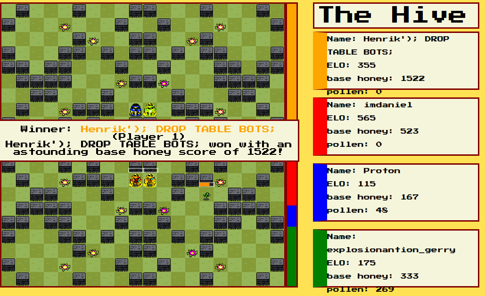
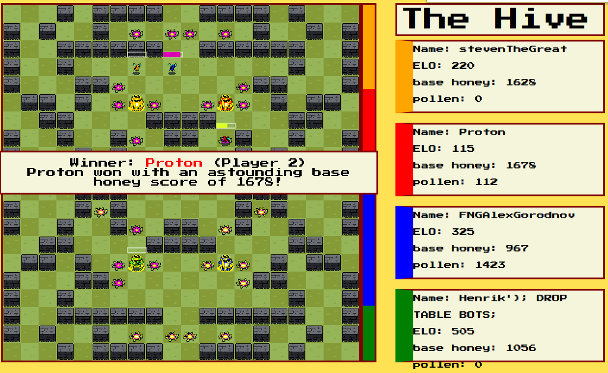
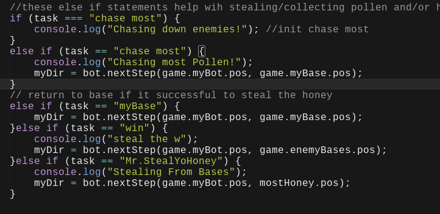
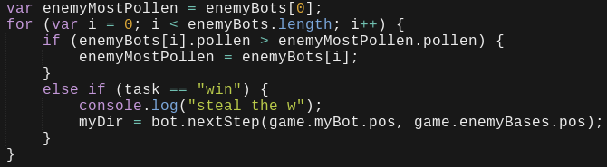
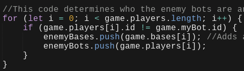
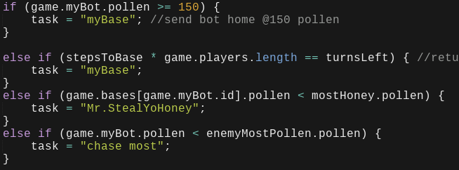

I have created life for a bee and the bee helps w/ getting pollen to make honey for me to win. My bee also steals from other hives next on the map. The the bee is a bot and the bot is controlled by a AI, so the AI determines what to in the gams. The allows me to help out certain players in the game and/or annoy others,their is also the downside I rarely win.
Overall the project works by collecting pollen and bring it to the base or the hive, this also the pollen to be turned into honey and this what helps you to win. Their are four players in a game and each bee are different because of how they are created by the person who contorlls it. The point of the game is to get your bee to gather as much honey as possible.
The image code below shows "if" and "else if" statements, these statements are used for task like "stealing honey", "chasing the most pollen", and other task. The task "Mr.StealYoHoney", "win", and "steal from base" are all these basically check my bee/bot position then check the enemy hives position to see which one has the pollen and is the closest, then it choose then that is the highest and closest one and raid it. These task can be useful, but currently I don't enough code to make it smart enough to steal around 60-80% successfully. Depending on the map I could have 10-40% success rate of stealing.
The "for" loop shown below helps the determines which enemy bot has the most pollen and try to steal from it. The "if" statement allows my bee to see how much each enemy bee has and determines which one has the most. The "if" and "else if" statment both contribute to see the distance and how much each enemy bee has. When it decides which one has the most it goes for it and gather around 150 or more honey/pollen points.
This "for" loop shown below helps to define what are enemy bots and enemy basaes. The "if" statement ids enemy players and my bot, then that separates them from being the same thing and this lets my bee to be created and not be working in the game. In the "if" statement it has arrays; the arrays are the enemy bases and the enemy bots, the bases arrays allows my bot to determine the position of enemy bases. This also help with capturing honey/pollen and bring it back to the home base.
I have lowered pollen/hony collection to greater then or equal to 150, so it would help not stay in place at random places in the game. This also helps me to gather pollen faster and to steal honey faster, so it can not be caught at the enemy hive. For the "else if" statements chases the hives with the most honey and the flowers with the most pollen. When it goes to point at or greater then 150 it will return back to base.
I did expected to actually work in the game, but my organization got in the way of making function and when I got organizing with some help it finally got to function. My bot does works mostly; it does collect pollen and honey from other players, but my bots main task is stealing from other players and tring bring it back to base. When ran it on the online server, as I stated before it's main task was to steal and my old collection limit was 200 to start to go back home. When I went back to my code I changed the number to be greater or equal to 150.
I thought that AI's deals with information that you use on the internet to arrange information and recommended advertisements to you and also I knew that AI are used for machines. Now I know that it can be used for games, search engines, etc; to help out society needs for tech. Now when I talk to people who does know much about AI,I could tell them what I know and see if they could what their reaction would be.
If would I had more time would be less stressed on trying to finish everything, I would know more about AI and how it works, I could also add more and change some code for my bot. Having more time to learn and create our bots we could have over powered bots; and this could make things more fun and exciting.
For this last project, I think I did better then what I thought at the start. Their where some areas where I needed some help and was stressed about getting it done. I could of done better in my previous projects to get a better score, maybe next year if their is sometype of coding. I might need to learn more about coding, so I can be electrical engineering and/or similar jobs.